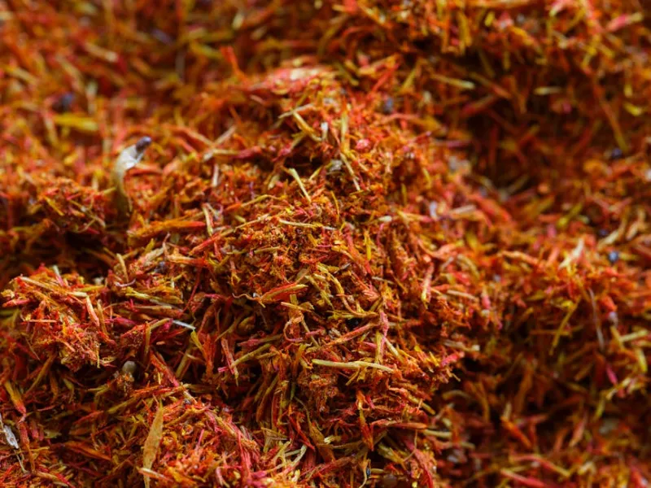

One kilogram of dried saffron requires the stigmas of approximately 70,000 Crocus sativus flowers. Each flower produces exactly three stigmas. Each stigma must be separated by hand within hours of the flower opening. No mechanization has ever replicated the human hand's ability to remove the crimson threads without crushing them.
The harvest window lasts just two weeks per year, typically in October. The flowers open in the morning and must be picked before noon. In that narrow window, Zafaran deploys all 240 harvesters across the estate simultaneously — working at dawn in near-silence, the fields smelling of earth and the faint honey-floral scent of fresh crocus.
What follows the picking — the separation, the drying, the grading — is equally precise. The full process from flower to sealed jar takes less than 36 hours to preserve maximum aromatic intensity.
From the moment corms are planted to the sealed jar that arrives at your door, every step follows protocols refined over 20 years on the Zafaran Estate.
Crocus sativus does not reproduce from seed — it multiplies through corms (bulb-like structures) that are divided and replanted each season. Our team plants 12–15 corms per square meter at a depth of 10–15 cm, in rows that allow for hand-picking access without soil compaction.
Corm selection is critical. We retain only the largest, densest corms from the previous year's crop — smaller corms produce fewer flowers and thinner stigmas. The rejected corms are composted back into the soil. This selective replanting is one reason Zafaran threads are consistently longer and heavier than estate averages.
The Crocus sativus flowers emerge in October, triggered by the first cold nights following the hot Khorasan summer. The flowering is sudden and concentrated — within a few days, entire fields transform from bare earth to a sea of purple blooms. This is the most beautiful and most demanding period of the estate's year.
Each flower opens precisely once, for a single morning. If not picked that day, the stigmas begin to degrade and lose aromatic compounds. The harvest window is typically 12–18 days, depending on the year's weather patterns. All other estate activities cease. The entire workforce is focused on a single task.
Harvesters begin before sunrise, when the flowers are still partially closed — this prevents petal damage from dew and limits the oxidation of stigmas from UV exposure. Each harvester works a designated row, picking only fully formed flowers and placing them in shallow baskets to prevent crushing.
An experienced harvester can collect 60–80 grams of fresh flowers per hour. The baskets are transported immediately to the separation room, where the stigmas must be removed within four hours of picking. No flower is ever left in the field after noon.
Inside the estate's temperature-controlled separation room, the day's harvest is spread across long tables. Experienced separators — mostly women whose skill has been refined over decades — gently pull the three crimson stigmas from each flower with a single motion. The style (white/yellow lower portion) is discarded.
Super Negin separation takes additional time: each thread is individually inspected and any with style contamination or broken tips is downgraded to Negin. One skilled separator processes approximately 3 kg of fresh flowers per hour. It is painstaking, meditative work that cannot be accelerated without compromising quality.
Fresh stigmas are spread on fine mesh screens and dried in our traditional kiln at 40–45°C for 20–24 hours. This controlled drying reduces moisture from 80% to below 12%, concentrating the safranal and crocin compounds that define saffron's flavor and color. Higher temperatures destroy aromatic compounds; lower temperatures risk mold.
After drying, the threads are graded against ISO 3632 standards using coloring strength (spectrophotometric measurement of crocin), safranal content, and moisture percentage. Each grading batch receives a lot number and the results are recorded in our laboratory database. Only after laboratory verification are batches sealed in nitrogen-flushed glass vials and prepared for shipment.

ISO 3632 is the international standard for saffron quality. It measures three key compounds. Zafaran's Super Negin exceeds the highest Category I thresholds in all three.
Crocin gives saffron its gold color. ISO Category I minimum is 200. Our Super Negin averages 280+ — measurably more color per gram means you use less. Tested by spectrophotometry at 440nm.
Safranal is responsible for saffron's distinctive aroma. ISO Category I minimum is 20–50. Our score of 70+ reflects the rapid post-harvest handling that prevents aromatic loss through oxidation.
Moisture is where adulteration often occurs. Excessive moisture increases weight artificially. Our threads are dried to below 12% — the ISO Category I maximum — and sealed immediately in nitrogen atmosphere.
Every decision in our harvest — from corm selection to kiln temperature — exists to deliver the most complete saffron experience possible. Order a sample and judge for yourself.
Shop the Collection